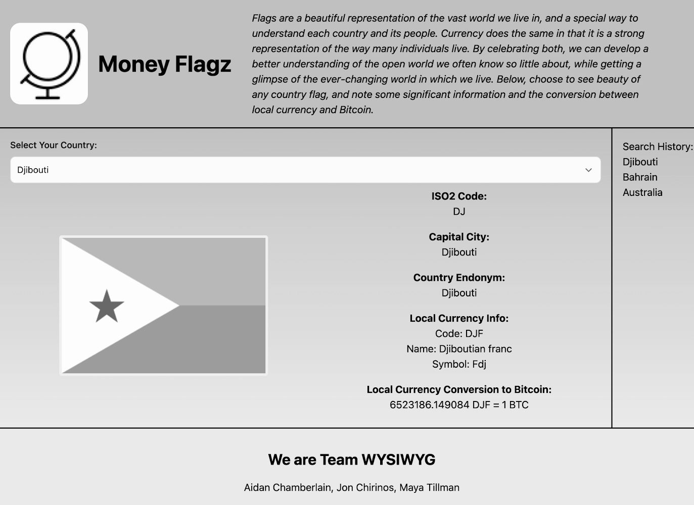
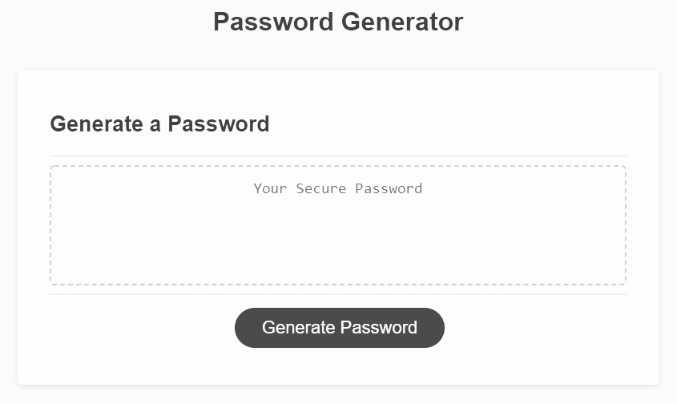

by Maya Simone Tillman
Maybe I should start from the beginning. Back in 2017, I studied Integrated Health Studies at the University of Illinois at Chicago, and completely immersed myself into the world of medicine and public health administration. I thought to myself, "My life is already mapped out for me. This is what I'm going to do." But, upon a series of (un)fortunate events, I realized that at the end of the day, medicine wasn't what I wanted to do. It wasn't until I reignited my love for writing and reading, that I realized where my true passion is coding and programming lannguages. So, I did what any fresh-out-of-undergrad individual did, and I got took advanced coding courses, specifically Northwestern University's Coding Bootcamp, to learn new skills to not only change my career, but to complement my passions of reading and writing. The journey has been difficult, I'll admit, but I have been to grateful to be able to take control of my own life and steer into a new path that will change my lfie for the better. Starting over is scary, no doubt, but it is better than remaining stagnant.
Projects in Web Development



Projects were used to test our collaboration and skill of the topics learned thus far in the Coding Bootcamp. Visit GitHub to naivgate "Money Flagz", our student driven project that accepts user input and uses APIs to display the relevant data fetches from the server. Technologies utilized in this project include: HTML, JavaScript, Tailwind CSS, and Third Party APIs (e.g. Country Flags, CountryStateCity, and Free Currency Rates).
Other projects in JavaScript include the Coding Quiz and Password Generator, the latter being a tool that will curate a password just for you. It takes into consideration personal preferences in regarrds to the password (e.g. special characters, lowercase letters, uppercase letters, and numbers.) The former, the Coding Quiz, uses JavaScript to create an interactive experience similiar to an online quiz. It contains a timer and responsive design that will tell the user if their answers are correct and incorrect, and will display their score on a Hall of Fame. The projects themselves are very user friendly and accesible, and they contain esay navigation to optimize the user's experience.
Let's Collaborate

"Be not afraid of greatness. Some are born great, some achieve greatness, and some have greatness thrust upon them." -William Shakespeare, Twelfth Night "I love new beginnings, for new beginnings are always here to welcome us."
Click here to follow me on GitHub
Click here to follow me on Linkedin
Contact me via email: mayastillman@outlook.com
Contact me via telephone: 708.407.6810
Real World Experience
I'd like to think of myself as a twenty-three year old with twenty-three years of experience. I've been exposed to the retail industry that has strengthened my skills of customer service; the many administrative positions that have expanded my knowledge of communication and office ettique in the workplace; laboratory roles in which I've performed duties as an Research Assistant; and lastly, computer engineering in which I've been granted the hands on skill application for web development. As I look back, these roles have shaped me into the individual I am today, and has prepared me for the roles I am excited to take.
by Maya Simone Tillman
My curiosity for computer languages intensified as I was exposed to Northwestern University’s Coding Bootcamp during my employment at the All of Us Research Program. Throughout these extensive weeks, I was able to transform my sole interest in coding to becoming a well versed junior developer. The best part, I must admit, is that it made sense to me in the most comforting and logical way. In other words, it just clicked. You know, I’ve always thought of myself as a naturally inquisitive individual in that I’ve always questioned the functions of every thing whether this has been machinery, websites, or even video games. For me, it was more so the “how’s” and the “why’s” regarding functionality, and not just accepting the fact that it worked “just because”. In my mind, I always thought, “How/Why does it work?” or “Why does B happen when I press A?” It was always these questions that led me down the path to coding, and it opened my eyes to the underground world of the things we use in daily life.
The truth is: I don't know where this new endeavor is going to take me. There are so many doors to open and so many paths traveled in order to meet my goal, but I can tell you what I plan to do. I plan on working more in full stack devlopment, all while learning more computer languages that will allow me to expand my portfolio. I want to continue my love and passion for reading and writing through coding, as both have become an important part of me.